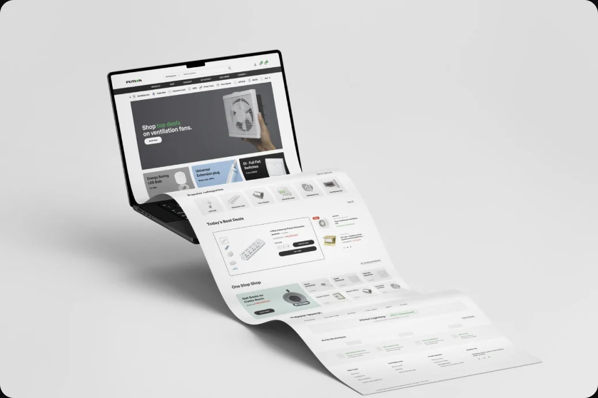
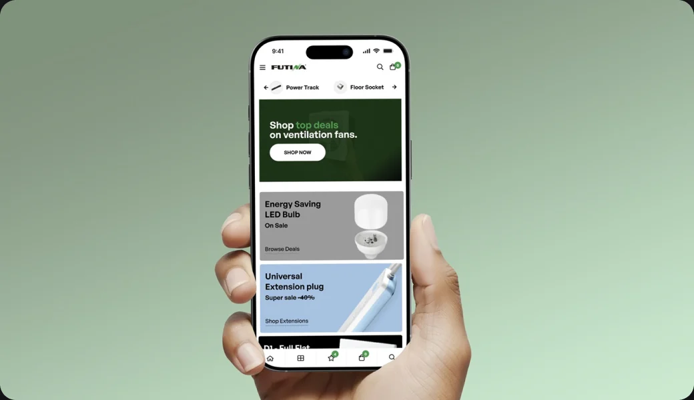
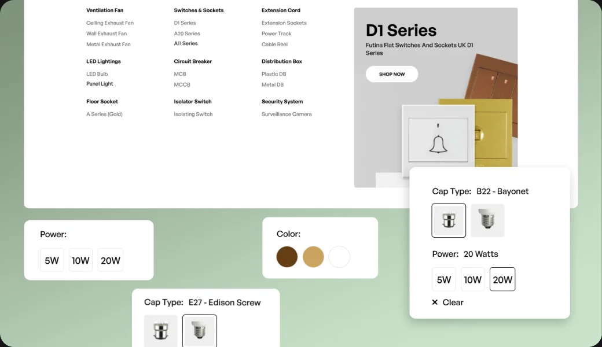
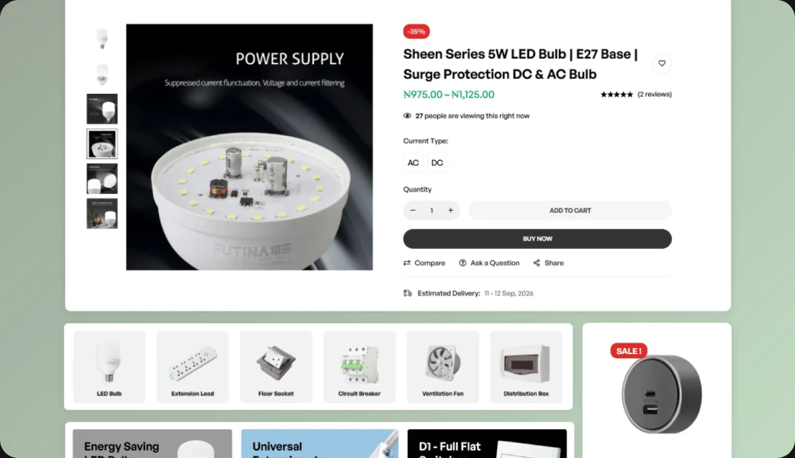
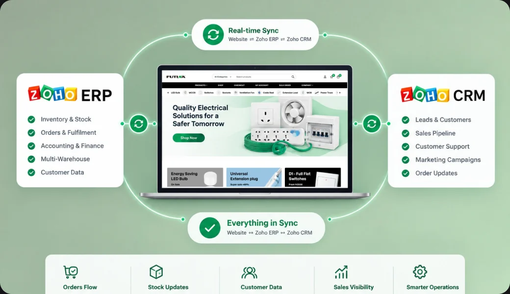
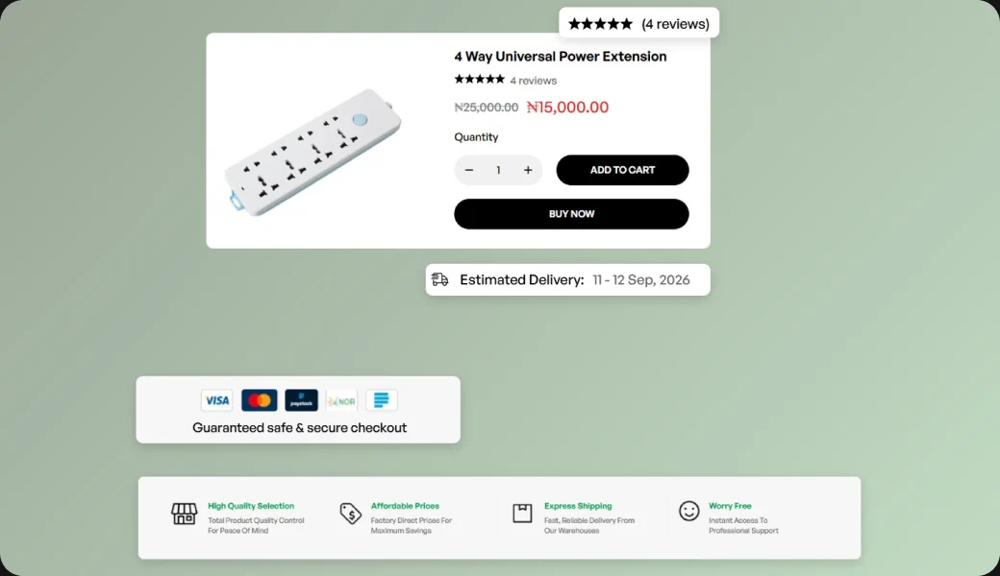

01Underdeveloped product taxonomy
Products weren't broken into logical categories and subcategories, only listed by SKU, driving a high bounce rate on product pages.
Futina Electricals, an electrical accessories manufacturer, had a distributor-style website that generated zero digital sales and couldn’t support any marketing effort. I led the redesign into a mobile-first ecommerce experience built around how Nigerian shoppers actually browse and buy electrical appliances. Within one month of launch: significant increase in customer engagement, and a 98% uplift in flagship product sales.
TL;DR

Futina’s marketing team came to us with a website that was actively working against their sales goals. It was built as a static distributor catalogue, not a store, so every marketing campaign they ran had nowhere useful to send traffic.
Through observing real behavior, mining existing data, and auditing the product, five root issues stood out:
Products weren't broken into logical categories and subcategories, only listed by SKU, driving a high bounce rate on product pages.
Dull photos and no video, in a trust-sensitive category where buyers can't examine an appliance in person.
The site carried none of Futina's colour, type, or tone, and read as an unofficial reseller rather than the manufacturer.
No certifications, awards, or real reviews visible, a dealbreaker in a market wary of counterfeit electricals
Most of Futina's traffic came from mobile, but the layout broke down below a laptop screen.
Mapped what Nigeria's electrical ecommerce players already did well, and where they consistently failed non-technical shoppers and trust-building. Those gaps became Futina's opportunity.
Working with the marketing team, I went beyond basic demographics to build out two working personas that shaped every design decision downstream: "The Technician" (B2B/trade buyer) & "The Homeowner" (non-technical buyer)"
I mapped the customer journey for both, from first landing (often via a mobile data-conscious connection) through to post-purchase, flagging friction points at each stage, especially around product comprehension for non-technical buyers, and speed/reorder efficiency for trade buyers.
Audited the fragmented catalogue through card sorting and tree testing with real shoppers, then restructured it into an intuitive IA.use-case categories and subcategories, realised through responsive mega-menus, visual category hubs, and dynamic contextual filtering. Both personas could self-segment quickly on a phone or a desktop, with a shorter path to purchase and less friction along the way.
Every product page was designed to serve both personas simultaneously: technical spec sheets available but not front-and-center, while imagery, video, and plain-language descriptions carried the primary story for non-technical shoppers.
Before development handoff, I ran the prototype through Attention Insight to simulate visual attention on key pages, confirming that primary CTAs and trust badges were landing in the natural attention path, and flagging pages with too much competing visual weight (cognitive overload risk). I used the tool's traffic-free A/B comparison to test layout variants before a single real user saw the site.
Post-launch, I set up Hotjar, Google Analytics, and VWO to move from assumption to evidence: session recordings and heatmaps to see actual friction, funnel analysis to find drop-off points, and VWO to run live A/B tests on top of what Attention Insight had already validated pre-launch.
To make this sustainable rather than a one-off audit, I built a recurring CRO task routine, a lightweight, repeatable checklist and set of behavioral triggers (e.g., cart abandonment rate crossing a threshold, a category's conversion dipping below baseline) that flagged when a page needed a fresh UX pass. This turned optimization into an ongoing process owned jointly with marketing, not a project that ended at launch.
The Solution
Mobile-first rebuild that behaves like an app on a phone: a thumb-friendly bottom navigation bar and a slide-in menu for the full category tree. Quick view skips full page reloads on slow connections, and the wishlist works without forcing an account, cached in-browser for guests and only synced if they register.

Taxonomy restructured around use-case categories with progressive filtering. Variants shown as images, not spec dropdowns, so a non-technical buyer identifies the right item by sight.

Product video and 360° view on every listing, so a shopper who can't hold the appliance gets the closest thing to an in-store inspection.

Other features
360° Product View, Quick View
Integrated the store with Futina’s inventory system and CRM. Every product and variant shows live stock status, so shoppers never order what isn’t available, and order and customer data flow into the CRM for sales and marketing follow-up.

Certifications, industry awards, and verified reviews surfaced on the homepage and product pages, addressing the biggest hesitation in a market wary of counterfeits.

Results
50% +
From startups to established brands, helping them achieve their digital goals.
98%
Worked with a variety of clients, from startups to established organisations.
Positive shift in customer experience sentiment, confirmed by post-launch surveys